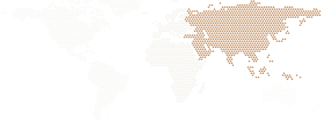

Together, let us make democracy great again.
Note de présentation
Montée des populismes, érosion des institutions, interférences étrangères, inégalités et effets des crises globales sur la gouvernance : les symptômes sont nombreux, sur tous les continents.
Il nous faut aujourd’hui défendre la démocratie libérale, mais aussi préparer son évolution, sinon sa refondation.
De nombreux think tanks œuvrent déjà dans ce sens. Trop souvent, ils agissent de manière isolée. Leur impact s’en trouve limité. Nous sommes convaincus qu’il y a place pour une initiative mondiale capable de fédérer les acteurs et de porter une voix plus collective.
Democracy Together (DT) est un réseau mondial de think tanks, ouvert à tous et singulièrement aux jeunes.
Notre pari est de construire une intelligence démocratique collective pour répondre aux défis présents et à venir, partout dans le monde.

Déjà présent et actif en Afrique et en Europe, il commence à déployer ses activités en Amérique du Nord, en Amérique du Sud, et bientôt en Asie.
VISION
Devenir une référence mondiale pour l’avancement de la pensée démocratique libérale, en favorisant un écosystème inclusif où les idées innovantes contribuent à des sociétés plus résilientes et plus équitables.
NOS MISSIONS
Au cœur de Democracy Together se trouve KOHOP, notre plateforme déjà multilingue. C’est le lieu où se construit l’intelligence collective du réseau, par l’échange et le partage de contributions courtes de qualité contrôlée.
Contributions courtes : 500 à 1 200 mots (format proche d’une tribune), avec liens possibles vers des textes plus développés.
Évaluation par les pairs : l’auteur sollicite trois relecteurs, pour en obtenir au moins deux. Leurs noms et leurs analyses sont publiés avec le texte.
Rédaction en chef : le rédacteur en chef veille à l’indépendance des relecteurs et décide de la publication.
Propriété et accès : les textes publiés appartiennent aux contributeurs. L’accès est gratuit et libre pour les lecteurs.
Publier sur KOHOP suppose l’adhésion au réseau du contributeur et de ses relecteurs. Ce dispositif élargit rapidement le cercle des contributeurs.
KOHOP constitue notre premier agent de liaison à l’échelle mondiale. Il y aura d’autres modes de partage et de coopération, locales ou thématiques : création et animation de think tanks autour de contributeurs à KOHOP, partenariats, colloques, recherches, etc.
À travers les différentes régions du monde, Democracy Together s’implantera en s’appuyant sur des correspondants locaux et territoriaux. Ils auront pour mission d’animer les échanges, de recenser les initiatives et les acteurs pertinents, de remonter les informations et les expériences du terrain, et de contribuer directement par leurs écrits et leurs analyses à enrichir les travaux du réseau.
Des correspondants thématiques pourront faire de même sur des sujets transversaux (éducation, etc.).
Leur nombre n’est pas limité. Ce sont des personnalités d’un niveau reconnu, choisies pour leur légitimité intellectuelle, professionnelle ou civique incontestable.
Ils sont des membres importants de Democracy Together. Ils constituent le lien essentiel avec le terrain et permettent au réseau de rester ancré dans les réalités locales tout en alimentant une réflexion collective de portée mondiale. Un Collège des correspondants sera créé dès que leur nombre sera suffisant.
À la date du 15 octobre 2026, le Conseil d’administration de Democracy Together est constitué de :
RESPONSABLES FONCTIONNELS BÉNÉVOLES
Le Comité d’honneur de Democracy Together (en cours d’élargissement) réunit des personnalités de premier plan, profondément attachées aux valeurs de la démocratie libérale et désireuses d’associer leur nom et leur autorité morale au développement de cette initiative. Leur soutien constitue un appui précieux pour porter notre ambition collective au niveau international.
Il sera formalisé sous forme d’une liste de soutiens que nous tiendrons régulièrement informés. Ils pourront notamment, et en fonction des opportunités, nous aider à :
Et ce dans toutes les tranches d’âge, notamment parmi les jeunes, et dans le respect de la parité.
Democracy Together dispose déjà de points d’appui dans plusieurs pays en Afrique, Europe, Amérique du Nord et Amérique du Sud. Le réseau est ouvert aux collaborations avec les think tanks, chercheurs et acteurs engagés dans la défense et le renouvellement de la démocratie libérale, partout dans le monde.
Nous aurons sous peu élaboré le démonstrateur
qui nous permettra de nous développer
et de lever les moyens nécessaires.
ÉCRIVEZ-NOUS
Association loi 1901 · Siège à Paris
